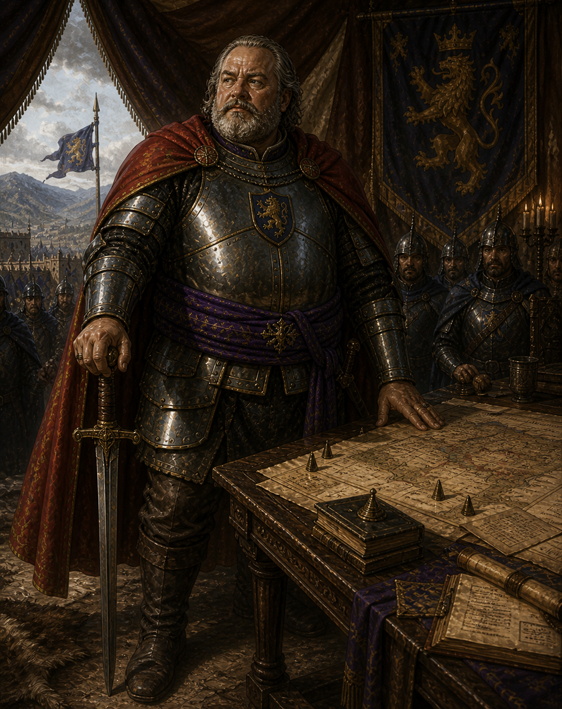

Thomdor Ammaeth
Cargo Antiguo Guardián de las Marcas Orientales, barón y comandante del Ejército del Este Afiliación Corona de Cormyr; Purple Dragons Raza y clase Humano; guerrero 17 (hoja de 1369 DR) Alineamiento Legal bueno Estado Murió en1369 DR; nacido en1298, unos71años Familia Hermano de Bhereu, primo tercero de Azoun IV Fuentes Cormyr (AD&D 2e) · Volo’s Guide to Cormyr · Cormyr: A Novel · Four from Cormyr · Swords of Eveningstar · Swords of Dragonfire · Stormlight · The Sword Never Sleeps
Thomdor murió en1369 DR, envenenado después de una cacería que se convirtió en ataque contra el círculo más cercano de Azoun IV. Para entonces había sido una de las presencias más firmes del reino: el barón corpulento al que sus soldados llamaban Old Paunch, el guardián del este y el primo del rey que podía compartir una broma sin dejar de observar el bosque. A fines de1374, su lugar pertenecía a la historia de un mando que había unido autoridad militar, administración y lealtad personal.12
Thomdor Ammaeth había nacido en1298 DR. Cuando murió, en1369, tenía alrededor de setenta y un años: la vida del guardián había atravesado décadas de servicio antes de acabar en aquel lecho vigilado por los hombres de la corona.3
Un veterano de hombros anchos
Tenía una barriga prominente y hombros anchos y musculosos. En1369 llevaba el cabello oscuro y liso, ya surcado por algunas canas; sus ojos grises conservaron durante la enfermedad la franqueza de alguien poco dispuesto a aceptar mentiras amables. La corpulencia no anulaba el oficio del jinete ni la experiencia del guerrero. Espada, armadura y silla de montar habían sido herramientas familiares para él y para su hermano Bhereu.45
El apodo de Old Paunch no expresaba desprecio. Los Dragons que lo servían le eran ferozmente leales y lo tenían por un hombre respetable. Aquella confianza resultaba tan importante como el parentesco con la corona: un comandante podía recibir el cargo por su posición, pero la fidelidad de quienes debían acompañarlo al combate dependía también de cómo ejerciera el mando. Thomdor era firme y justo, y esa reputación lo seguía en Arabel.26
El ejército que tenía su base en Arabel
El Ejército del Este y la guarnición de Arabel no eran un solo cuerpo sometido a una sola autoridad. Thomdor mandaba el primero; la guarnición obedecía a Myrmeen Lhal. Él tenía mayor rango, pero su fuerza se alojaba en la ciudad sin absorber su gobierno civil. Los dos jefes eran amigos y rotaban unidades entre ambos cuerpos para evitar rivalidades y extender la experiencia de combate.2
El ejército contaba con mil setecientos soldados en pie. Alrededor de trescientos solían estar de patrulla o destinados en puestos exteriores. La guarnición urbana reunía mil, incluida la guardia del palacio, mientras que la milicia podía alcanzar tres mil hombres y mantenía doscientos veinte en servicio. Esas cifras describían fuerzas distintas, con funciones que convergían sobre la defensa de la ciudad y de sus caminos, sin convertirse por ello en una hueste personal del barón.7
Dutharr, su oficial de enlace, daba continuidad práctica al conjunto. Como Oversword y jefe de policía efectivo, reunía la relación entre la watch, la guarnición y el ejército. Trabajaba bien con Thomdor y prefería entenderse con él antes que con Myrmeen, con quien tenía una ligera incompatibilidad de carácter. La cooperación institucional descansaba así en relaciones personales que evitaban que cada diferencia se transformara en una disputa de mando.67
Espadas, cartas y cuentas
La frontera oriental no se sostenía únicamente con tropas regulares. Los Red Ravens trabajaban para la corona en las Stonelands y mantenían buenas relaciones con Thomdor y Myrmeen. Las compañías de aventureros también tenían un lugar reconocido: el guardián podía tramitar cartas reales en Arabel, integrando a esas bandas en una forma de servicio que el reino prefería conocer y regular.68
En1348, esa idea quedó clara cuando Thomdor frenó a Dahauntul ante un portal utilizado por agentes zhentarim. El oficial quería perseguirlos con todos los hombres y War Wizards que pudiera reunir. El barón ordenó dejar actuar a los Swords of Eveningstar: resolver peligros de esa clase formaba parte de la función de sus cartas. No toda amenaza debía convertirse en una expedición del ejército si había aventureros autorizados capaces de afrontarla.9
Su trabajo también lo llevaba a las cuentas de las ciudades. En la corte real supervisaba la recaudación, disfrutaba de los números y tenía fama de buen administrador. Sarp Redbeard lo irritaba por los registros vagos de Wheloon, que hacían fluctuar los tributos. Thomdor no confundía desorden con traición: creía honrado a Sarp y no pensaba que estuviera acumulando dinero para formar un ejército privado. Quería cuentas mejores, no una acusación útil para engrandecerse.10
La caza de Gondegal
En1352 había pasado una estación persiguiendo a Gondegal por el norte de Cormyr. El rebelde conseguía desaparecer entre bosque y niebla cada vez que el barón preparaba el ataque; esos encuentros frustrados alimentaban la leyenda de un enemigo decidido y carismático. Cuando Arabel lo recibió como rey, Thomdor tuvo que afrontar las consecuencias militares y políticas de una persecución que no había logrado detenerlo.11
En el consejo anterior al asalto, sus hombres recibieron la tarea de tomar la puerta sur, abrir la entrada a los mercenarios y asegurar las calles y edificios próximos. El plan no carecía de daños previstos: los War Wizards debían romper la muralla, con riesgo para las construcciones del lado interior. Thomdor recordó el Guiño y el Beso, su taberna favorita, situada junto al tramo amenazado. La observación no alteró las órdenes. El deber podía exigir perder algo que conocía y apreciaba.12
La familia del rey
Thomdor y Bhereu eran hermanos, hijos de Tanaeth Rowanmantle y primos terceros de Azoun. El vínculo familiar se mezclaba con una confianza de compañeros de armas. En las cacerías podían comentar los pretendientes de las princesas, burlarse de las preocupaciones de Vangerdahast y discutir si Azoun toleraría imponer un matrimonio desgraciado a una de sus hijas. Thomdor no lo creía: conocía el afecto del rey por ellas.513
Esa cercanía no le impedía entender el poder como custodia. En1369, mientras el grupo se aproximaba a una antigua torre de señales, recordó la lección de Rhigaerd: la tierra estaba antes que sus gobernantes y seguiría después de ellos. El deber de los hombres encargados del reino era cuidarla durante el tiempo que les tocara vivir. Su satisfacción no exigía figurar por delante de Azoun; había aceptado servir cerca del rey, incluso a su sombra.14
También podía mostrarse franco sin crueldad. En1348, cuando tuvo que comunicar a Narantha Crownsilver la muerte de su madre, abandonó cualquier rodeo inútil y le ofreció la noticia de manera directa y cortés. Más tarde compartió con Myrmeen y Dove Silverhand un momento de risa a costa de la vergüenza de Dahauntul. La seriedad del cargo no había borrado la familiaridad del veterano.15
La máquina dorada
Durante la cacería de1369, el ataque llegó desde la vieja torre: un toro dorado, una máquina movida por magia que se abalanzó sobre los cazadores. Thomdor y Bhereu cargaron con las espadas mientras intentaban dominar sus caballos. Llevaban equipo de caza y poca armadura, preparados para venados y no para una fortaleza mecánica. El barón buscó las articulaciones y consiguió dañar una pata.16
El golpe torció y melló su hoja. Al acercarse, el vapor del monstruo le bañó el rostro con un olor acre y amargo; sintió aceite en la garganta y después empezó a perder la visión. Primero sospechó magia. Bhereu reconoció el veneno, y Thomdor comprendió que necesitaban regresar a Suzail. Aún así continuó luchando: con las piernas temblorosas, intentó hundir la espada en la cuenca que Azoun había dejado vacía al arrancar uno de los ojos de la máquina.1617
Bhereu no sobrevivió. Thomdor quedó en una cama con dosel, atendido por Gwennath de Tymora y vigilado por Dragons. Había momentos de conciencia y largos períodos de sueño. Vangerdahast procuró tranquilizarlo, pero el barón rechazó las mentiras de cortesano. Sabía que su hermano había muerto y entendía su propia fragilidad. No quería únicamente cuidados: echaba de menos a los hombres que podían traerle chistes y distracciones.18
La muerte llegó después. Cuando Azoun se recuperó, anunció que necesitaba un nuevo comandante militar para Arabel y ofreció la responsabilidad a un joven Marliir. Thomdor ya no estaba para revisar impuestos, discutir competencias con Daramos o escuchar noticias de las patrullas. El hombre que había hablado de custodiar la tierra había dejado su puesto a otros.1
Rumores
En1348 un conspirador quiso presentarlo como un traidor celoso, dirigido por Vangerdahast, y utilizar esa acusación para enfrentar al reino contra sus magos. La intención de tenderle aquella trampa no demostraba deslealtad del barón; mostraba el daño que sus enemigos esperaban causar al apropiarse de su nombre.19
Estadísticas (D&D 3.5)
Hoja de juego · 1369 DR
| Tamaño/Tipo | Humanoide Mediano (humano) |
|---|---|
| Alineamiento | Legal bueno |
| Edad | 71 años al morir, en 1369 (1298–1369) |
| Características | Fue 16, Des 7, Con 11, Int 15, Sab 16, Car 16 |
| Dados de Golpe | (17d10)+17 (155 PG) |
| Iniciativa | +2 |
| Velocidad | 6 m |
| Clase de Armadura | 27, toque 10, desprevenido 27 |
| Ataque base/Presa | +17/+20 |
| Ataque | Longsword +3 (Keen) +25 c/c (1d8+10/15-20) |
| Ataque completo | Longsword +3 (Keen) +25/+20/+15/+10 c/c (1d8+10/15-20); o Masterwork Lance +21/+16/+11/+6 c/c (1d8+4/×3); o Masterwork Longbow +16/+11/+6/+1 a distancia (1d8/×3) |
| Espacio/Alcance | 1,5 m/1,5 m |
| Salvaciones | Fort +13, Ref +6, Vol +13 |
| Dotes | Blind-FightYou know how to fight in melee without being able to see your foes.Unearthed Arcana, p.89, CleaveYou can follow through with powerful blows. If you deal a creature enough damage to make it drop (typically by dropping it to below 0 hit points or killing it), you get an immediate, extra melee attack against another creature within reach. You cannot take a 5-foot step before making this extra attack. The extra…Player's Handbook, p.92, Combat ExpertiseYou are trained at using your combat skill for defense as well asoffense.Player's Guide to Faerûn, p.92, EnduranceYou are capable of amazing feats of stamina. You gain a +4 bonus on checks relating to stamina or extended physical activity. Also, you may sleep in light or medium armor without becoming fatigued.Player's Handbook, p.93, Greater Weapon Focus (Longsword)Choose one type of weapon, such as greataxe, for which you have already selected Weapon Focus. You can also choose unarmed strike or grapple as your weapon for purposes of this feat. You are especially good at using this weapon. You gain a +1 bonus on all attack rolls you make using the selected weapon. This bonus…Player's Handbook, p.95, Greater Weapon Specialization (Longsword)Choose one type of weapon, such as greataxe, for which you have already selected Weapon Specialization. You can also choose unarmed strike or grapple as your weapon for purposes of this feat. You deal extra damage when using this weapon. You gain a +2 bonus on all damage rolls you make using the selected weapon.…Player's Handbook, p.95, Improved Critical (Longsword)Choose one type of weapon, such as longsword or greataxe. With that weapon, you know how to hit where it hurts.Player's Guide to Faerûn, p.95, Improved InitiativeYou can react more quickly than normal in a fight.Unearthed Arcana, p.96, Improved ToughnessA creature with this feat is significantly tougher than normal.Monster Manual III, p.207, Iron WillYou have a stronger will than normal. You get a +2 bonus on all Will saving throws.Player's Handbook, p.96, LeadershipYou are the sort of person others want to follow, and you have done some work attempting to recruit cohorts and followers.Player's Guide to Faerûn, p.97, Mounted CombatYou are skilled in mounted combat. Once per round when your mount is hit in combat, you may attempt a Ride check (as a reaction) to negate the hit. The hit is negated if your Ride check result is greater than the opponent's attack roll.Player's Handbook, p.98, NegotiatorYou are good at gauging and swaying attitudes.Player's Guide to Faerûn, p.98, Power AttackYou can make exceptionally powerful melee attacks. On your action, before making attack rolls for a round, you may choose to subtract up to 17 from all melee attack rolls and add the same number to all melee damage rolls.Player's Handbook, p.98, Ride-By AttackYou are skilled at making fast attacks for your mount. When you are mounted and use the charge action, you may move and attack as if with a standard charge and then move again.Player's Handbook, p.99, Skill Focus (Ride)Choose a skill, such as Move Silently. You have a special knack with that skill.Unearthed Arcana, p.100, Spirited ChargeYou are trained at making a devastating mounted charge. When mounted and using the charge action, you deal double damage with a melee weapon (or triple damage with a lance).Player's Handbook, p.100, Weapon Focus (Longsword)You are especially good at using this specified weapon.Player's Guide to Faerûn, p.102, Weapon Specialization (Longsword)Choose one type of weapon, such as greataxe, for which you have already selected the Weapon Focus feat. You can also choose unarmed strike or grapple as your weapon for purposes of this feat. You deal extra damage when using this weapon. You gain a +2 bonus on all damage rolls you make using the selected weapon.Player's Handbook, p.102 |
| Habilidades | DiplomaciaNegociar, persuadir y cambiar la actitud de los demás.10 rangos · Car +15, IntimidarAmedrentar y desmoralizar.20 rangos · Car +23, MontarMontar y combatir a caballo.20 rangos · Des +23, NadarNadar.5 rangos · Fue -4, Saber (nobleza y realeza)Saber erudito de un campo concreto.10 rangos · Int +12, Trato con animalesAdiestrar y dirigir animales.20 rangos · Car +23, TreparTrepar muros, cuerdas y pendientes.5 rangos · Fue +2 |
| Idiomas | Chondathan, Common |
Longsword +3 (Keen)threat range doubledPersonalizado - Wizards of the Coast - Player's Handbook, p.119, Full Plate +3This armor is made of shaped and fitted metal plates, must be made to measure or adjusted for cost.Personalizado - Wizards of the Coast - Player's Handbook, p.124, Heavy Steel Shield +2Personalizado - Wizards of the Coast - Player's Handbook, p.125, Cloak of Resistance +3These garments offer magic protection in the form of a +3 resistance bonus on all saving throws (Fortitude, Reflex, and Will). Faint abjuration; CL 5thDungeon Master's Guide, p.253, Ring of Protection +2This ring offers continual magical protection in the form of a deflection bonus of +2 to AC. Faint abjuration; CL 5thDungeon Master's Guide, p.232, Amulet of Natural Armor +2This amulet, usually crafted from bone or beast scales, toughens the wearer's body and flesh, giving him an enhancement bonus to his natural armor bonus of from +2. Faint transmutation; CL 5thDungeon Master's Guide, p.246, Masterwork LanceA lance deals double damage when used from the back of a charging mount. It has reach, so you can strike opponents 10 feet away with it, but you can't use it against an adjacent foe. While mounted, you can wield a lance with one hand.Personalizado - Wizards of the Coast - Player's Handbook, p.118, Masterwork LongbowYou need at least two hands to use a bow, regardless of its size. A longbow is too unwieldy to use while you are mounted.Personalizado - Wizards of the Coast - Player's Handbook, p.118, Commander's Ringsense direction and distance of any Purple Dragon Rings within 100-ft radius.Magic of Faerûn, Ioun Stone, Pale Blue RhomboidThese crystalline stones always float in the air and must be within 3 feet of their owner to be of any use. When a character first acquires a stone, she must hold it and then release it, whereupon it takes up a circling orbit 1d3 feet from her head. Thereafter, a stone must be grasped or netted to separate it from…Dungeon Master's Guide, p.260, Ioun Stone, Pink RhomboidThese crystalline stones always float in the air and must be within 3 feet of their owner to be of any use. When a character first acquires a stone, she must hold it and then release it, whereupon it takes up a circling orbit 1d3 feet from her head. Thereafter, a stone must be grasped or netted to separate it from…Dungeon Master's Guide, p.260, Potion of Cure Serious WoundsCures 3d8+5 damage (PH P.216)Dungeon Master's Guide, p.229
Hoja calculada con PCGen (D&D 3.5) · 1369 DR · descargar .pcg
Secretos (DM)
En su lecho de enfermedad, Thomdor confió a Vangerdahast una deuda que aún pesaba sobre su conciencia. Cerca de Yuthgalaunt, en el camino de Ordulin a Yhaunn, vivía una mujer a la que había prometido regresar para casarse. No volvió. Pidió al mago que le llevara dinero suficiente para una vejez cómoda y que se disculpara en su nombre. La promesa del mago no permite dar por cumplido ese último encargo.18
Las muestras de carne conservadas para recrear a los miembros de la familia real habían sido destruidas. La segunda oportunidad que Vangerdahast esperaba utilizar para Bhereu y, si era necesario, para Thomdor y Azoun había desaparecido.20
Footnotes
-
Forgotten Realms Wiki → Cyclopedia of the Realms, Forgotten Realms Campaign Set1987 p.54; Cormyr: A Novel, edición inglesa1998 p.292. Referencias secundarias en Thomdor Ammaeth. ↩
-
Cormyr: A Novel, pp. 16,135. ↩
-
Cormyr (AD&D 2e), p. 62; Volo’s Guide to Cormyr, p. 56. ↩
-
Swords of Eveningstar, p. 166; escena de1348 según docs/fechas_novelas.md. ↩
-
Cormyr (AD&D 2e), p. 45. ↩
-
Cormyr: A Novel, pp. 377–378; capítulo fechado1352. ↩
-
Cormyr: A Novel, p. 381. ↩
-
Cormyr: A Novel, pp. 17–20. ↩
-
Cormyr: A Novel, p. 22. ↩
-
Swords of Eveningstar, pp. 168,182–183; escenas de1348. ↩
-
Cormyr: A Novel, pp. 25–26. ↩
-
The Sword Never Sleeps, p. 6; escena de1348 según docs/fechas_novelas.md. ↩
-
Cormyr: A Novel, p. 79. ↩